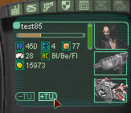

Go to the Nerve Center paddock or go inside the Nerve Center. Hit the TU+ button on the bottom right of your display (next to your avatar portrait). This will stow Transium Units into your backpack. You may also go close to a Transium Well or Transium Silo that you own and drag the Transium icons back and forth between the avatar portrait and the Well or Silo. The avatar's weapon and some items always uses Transium from the backpack. Rovers use the camp's Transium unless they are in another player's camp, when they use the Transium in your backpack. Make sure you have enough, and get back to your Nerve Center or Wells to get more when you run out. |
 |